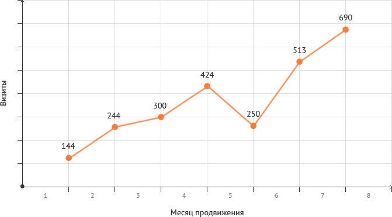

проблемы
С точки зрения SEO сайт на старте был вообще не подготовлен: неуникальный контент, пустые страницы, одинаковые title по всему сайту, отсутствие заголовков H1. Кроме того, сайту было всего 2 (!) месяца, и в Яндексе он даже не был толком проиндексирован. В общем работы было очень много.
решение
Это оказался очень правильный клиент: понимая, что у сайта много проблем, а для их решения у нас мало времени, маркетолог ООО “ВСК” всегда старалась быть на связи. Быстро утверждались тексты. оперативно вносились изменения на сайт, исправно оплачивались счета. После напряжённой работы с проектом так приятно наблюдать, как клиент растёт и развивается!
Результаты
В результате 95% целевых запросов в ТОП-10 Яндекс, причём многие из них в ТОП-1 ПС Яндекс
На момент составления кейса (ноябрь 2015г.) в ТОП-1 ПС Яндекс сайт находится по следующим запросам: дома из velox, дома велокс, дома из велокса, велокс цена дома, велокс цена, технология велокс цена, дома велокс отзывы, технология velox отзывы,
технология велокс отзывы, проект дома по технологии velox, велокс проекты домов, проекты домов из велокса, velox проекты домов, несъемная опалубка velox цена, опалубка велокс купить, velox опалубка цена, несъемная опалубка velox купить,
несъемная опалубка velox, несъемная опалубка velox велокс, несъемная опалубка велокс цена.
Рост трафика на 400 %

{kind=link}
отзыв клиента

«Мы очень довольны работой менеджера – получаем подробные отчеты, консультации по всем возникающим вопросам, видим, как быстро выполняются поставленные задачи. Результат нас устраивает. В ТОПе почти 80% целевых запросов, во много раз с момента
старта продвижения увеличился трафик из поисковых систем, сайт приносит доход! Все просто супер, рекомендуем!»